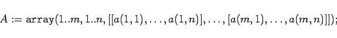
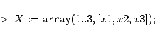
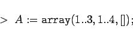
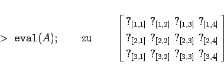
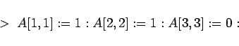
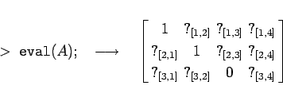
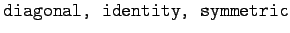
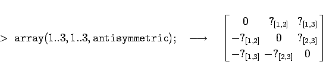
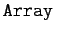
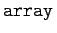

Inhalt Index DeskTop Bronstein

 Computeralgebrasysteme Maple Tabellen- und feldartige Strukturen, Vektoren und Matrizen
Computeralgebrasysteme Maple Tabellen- und feldartige Strukturen, Vektoren und Matrizen


Entsprechend definiert man zweidimensionale Arrays, etwa mit
|  | (20.48) |
Die so definierte Struktur versteht Maple als Matrix der Dimension n x m. Die Werte von a(i,j) sind die entsprechenden Matrixelemente.
| Beispiel |
|





|
Mit dem Aufruf
Als optionale Argumente können Indexfunktionen der Art ,
benutzt werden. Man erhält damit die entsprechenden Matrizen.
| Beispiel |
|

|
Ein weiterer Befehl zur Konstruktion von mehrdimensionalen Strukuren ist . Dieses Kommando hat die gleiche Form wie , läßt aber wesentlich mehr Optionen zu. Intern unterscheiden sich beide Befehle durch die Art der Datendarstellung (Hash-table (assoziativer Array), feste Blocktabelle (normaler Array)).